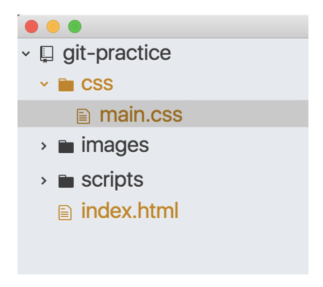

常用
git init初始化目錄git status這個目錄的狀態git log檢視 git 紀錄git log —-oneline檢視 git 紀錄，不一樣的輸出格式git reflog顯示所有 log (包含隱藏的 log)
git clone https://github.com/[GitHub帳號]/[遠端repo名稱].git下載專案
將檔案交給 Git
git add <file>將檔案放入暫存區 (stage)
git add . & git add -all 不同
git add . 將所有變更檔案加入暫存區 (只限此目錄下以及子目錄)
git add -all 將所有變更檔案加入暫存區 (不只包含當下目錄，真正的所有變更檔案)

這邊有修改過的兩隻檔案 main.css & index.html ，如果在根目錄 git-practice 下分別下git add . & git add -all，main.css & index.html 都會被加入暫存區。
但如果在 git-practice/css 目錄下分別下 git add . & git add -all的話，git add . 只會有 main.css 加入暫存，git add -all 則會有 main.css & index.html 加入暫存。
將檔案移出暫存區
git reset HEAD <file> 將檔案移出暫存區 (stage)
git rm —cached <file> 將檔案移出暫存區 (stage)
git reset 將全部檔案移出暫存區 (stage)
將檔案放入儲存庫
git commit -m “<commit message>” 將暫存區的東西放入儲存庫 (Repository)
每個 commit 都會有一個唯一的 ID，SHA1碼，這是一個16進位值，共40字元
提交空白 commit
git commit —allow-empty-message 將暫存區的東西放入儲存庫 (Repository)，可以提交空白的 commit message
如果暫存區沒有東西可以提交嗎？
git commit —allow-empty -m “empty"
加上 -allow-empty 後，即使暫存區沒有東西，還是可以提交，不過用處不大，應該主要用來練習
回到之前的版本
git reset —hard <commit id> commit id 就是 SHA1 碼，只需要打上前六碼就可以了
比較差異
git diff <commit1 ID> <commit2 ID>
- Post title：【Git】Git terminal 指令
- Post author：Neil Yang
- Create time：2020-07-03 00:00:00
- Post link：https://des86532.github.io/2020/07/03/Git/git-terminal/
- Copyright Notice：All articles in this blog are licensed under BY-NC-SA unless stating additionally.